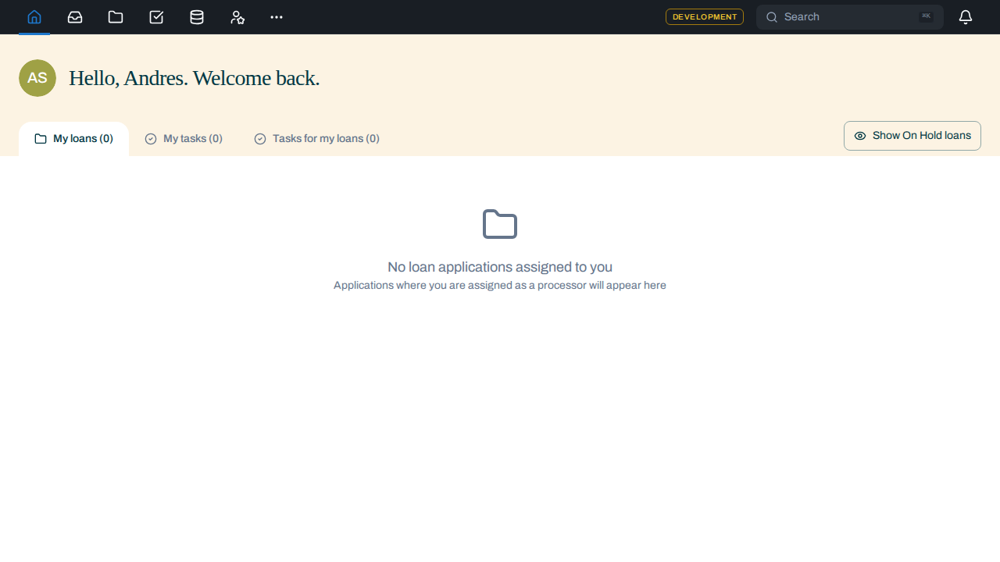

Two lanes,
one night.
An agent harness that builds two features at once and refuses to call either one done without evidence. This is the record of a real run — two features, two isolated environments, two verdicts.
Greeting punctuation
Hello, {name}! → Hello, {name}.
9e8eb3807 · slot 1 · PASS
Square nav icon
House icon → plain square, top-left nav
47866848b · slot 2 · PASS
Use ← → or the controls below. Slides 5–7 are interactive.
One lead, three specialists, and a rule about evidence
Your interactive session is the lead. Every result returns to it — agents never hand off to each other, because that is what strips an author's reasoning out before anyone checks their work.
Fresh context is the mechanism
The validator receives the spec and the diff — never the implementer's reasoning. An agent that talks itself into a shortcut while building will carry the same reasoning into checking its own work.
A different model, deliberately
The implementer runs on Opus. QA runs on OpenAI's gpt-5.6-sol through Codex. A reviewer sharing the author's model shares the author's blind spots.
A PASS is a file
verdict-check.sh refuses a PASS that is for an older commit, skipped a gate, or claims a rung with no evidence file behind it. What it cannot check is whether the evidence is honest — so a person still reads it.
Two features, two working trees, zero collisions
Each feature gets its own git worktree, its own branch, its own checkout. Two implementer agents wrote code at the same time and neither could see the other's files. The proof is not a diagram — it is two screenshots taken from two environments.

Read those two images together
Lane A shows the new punctuation and the old house icon. Lane B shows the new square. Same moment, same machine, two environments that could not contaminate each other. That is the whole argument for lanes, captured by accident.
Why QA lives on a machine that holds nothing valuable
Codex needs Docker, Kubernetes, a browser and the network to test anything for real. An agent with that much access belongs somewhere disposable — and somewhere that has never seen the implementer's reasoning, so the fresh-eyes rule holds by construction.
What one attempt owns
- Execution isolation
- sandbox · protocol 5
- Namespaces
- mount · net · pid · uts · ipc
- Docker
- private daemon + storage
- Cluster
- own Kind cluster + database
- Filesystem
- private tmpfs /tmp, HOME, tool state
Because each attempt runs its own Docker daemon, one job pruning images cannot delete another job's. That is what made the Pantheon repo untouchable: no staging prerequisite, no Tiltfile change, nothing added to the product repo at all.
Two slots, one build lock
The worker holds two slots. Bootstrap is serialized through a single lock so two cold image builds never collide; once an environment is ready the lock is released and validation overlaps.
slot 1 3a4282e5 lane A slot 2 62aa0c3d lane B 02:05:43 A preparing holds lock 02:06:22 B preparing queued 02:43:25 A environment ready lock released 02:48 B building holds lock 03:24:32 B environment ready
Cleanup releases the slot. A failed cleanup quarantines it instead, and a systemd reaper recovers interrupted attempts without touching the neighbouring environment.
Five rungs. Every claim carries its receipt.
Select a rung to see what it actually produced in this run. Rungs 1 and 2 are mandatory; the charter decides the rest, and a skipped rung must give a reason.
The run, as it actually happened
Real timestamps from 15 September 2026. Press play and watch both lanes move: A takes the build lock, B waits, then both validate.
Bootstrap was ~38 minutes per lane — every attempt was a cold image build, because a sandbox's Docker cache dies with it. A per-slot cache has since been enabled; it had not yet paid off when this run executed.
What "verified" means here
Switch lanes to see the real artifacts. Neither feature was accepted on a test result alone — both were driven in a real authenticated browser.
Four attempts failed before two passed
The failures are the interesting part, because none of them were the code. Three were a charter that named too few services, and one was a browser waiting on the wrong signal.
What went wrong
- Attempt 1 & 2
- task-app ENOTFOUND sns-sqs
- Attempt 3
- dashboard hung 360s
- Lane B browser
- networkidle timeout, retried
task-service exits without localstack; the dashboard blocks without insurance-provider. Both were missing from the charter's service list — an operator error the environment surfaced loudly rather than hiding.
What the harness got right
Every failure came back as INCOMPLETE with codex.ran = false — never as a defect blamed on the code. The checker refused each one. When lane A's environment collapsed, lane B kept running and A's slot released cleanly.
Two agents also found the same real bug independently: turbo test:agentic is undefined for web-app, so the gate reported success having run zero tests. It is fixed, and Codex had already been defending against it.
Still true, and worth saying out loud
Most of this harness is prose, and prose does not execute. What is genuinely enforced: the planner's tool allowlist, the repo's TDD hooks, and verdict-check.sh. Everything else holds because the model chooses to follow it — and that failure would be silent. So the last step is never the script. It is a person reading the evidence.